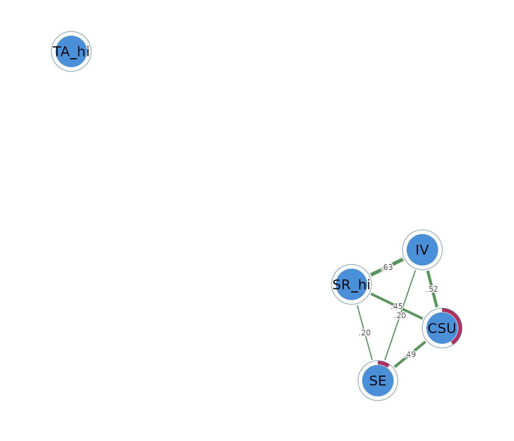

What a mixed graphical model is
A mixed graphical model analyzes continuous and binary variables in the same network. A continuous node can represent a scale score or measured quantity. A binary node can represent symptom presence, group membership, or a yes/no response.
Each edge describes an association that remains above and beyond the other variables. Consider a network with continuous motivation and self-efficacy scores together with binary indicators for assignment completion and high test anxiety. An edge between motivation and assignment completion means that motivation remains associated with the conditional probability of completion after self-efficacy, anxiety, and the other nodes have been considered.
A positive edge indicates that higher values or endorsement tend to occur together after adjustment. A negative edge indicates an inverse adjusted relation. A missing edge means that the selected model did not retain enough unique association for that pair. Edges remain associational and provide no causal direction.
The data
The example uses three continuous SRL_GPT scores:
cognitive strategy use (CSU), intrinsic value
(IV), and self-efficacy (SE). Self-regulation
and test anxiety are represented by binary indicators,
SR_hi and TA_hi, coded 1 at or above their
respective medians and 0 below them.
head(mixed_data)
#> CSU IV SE SR_hi TA_hi
#> 1 5.307692 5.666667 5.777778 0 1
#> 2 5.846154 6.444444 6.000000 1 1
#> 3 6.615385 6.666667 6.222222 1 0
#> 4 5.692308 6.555556 6.333333 1 1
#> 5 4.384615 5.555556 4.888889 0 1
#> 6 4.846154 5.444444 5.666667 0 0The self-regulation indicator has an endorsement rate of 0.54, and the test-anxiety indicator has a rate of 0.50. The example coding is pedagogical. Real applications should preserve continuous variables when the research question concerns their full scale and should use binary coding only when the two states have a meaningful interpretation.
Fitting the network with psychnet()
psychnet() estimates a mixed graphical model when
method = "mgm". It detects 0/1 columns as binary and other
numeric columns as Gaussian. The default AND rule retains an edge when
both nodewise models select the relation.
mixed_net <- psychnet(data = mixed_data, method = "mgm")
mixed_net
#> <psychnet> mgm network
#> nodes: 5 edges: 6 (undirected)
#> optimality (KKT residual): 7.58e-08The fitted network contains 5 nodes and 7 edges. The printed KKT residual is .
Inspecting mixed edges with summary()
summary() prints the fitted model and returns a table
with from, to, and weight. The
weights are standardized nodewise interaction estimates combined into an
undirected network.
summary(mixed_net)
#> <psychnet> mgm network
#> nodes: 5 edges: 6 (undirected)
#> optimality (KKT residual): 7.58e-08
#> edge weight: range [0.196, 0.632], mean 0.413The largest edge joins intrinsic value and high self-regulation
(IV-SR_hi, 0.632). Higher intrinsic value is
associated with higher conditional odds of belonging to the high
self-regulation group after the other nodes have been taken into
account. The CSU-IV and
CSU-SE edges are also positive, at 0.518 and
0.485.
The SR_hi-TA_hi edge is negative (-0.168).
High self-regulation is associated with lower conditional odds of high
test anxiety after the continuous learning constructs are considered.
Test anxiety has no other retained edge.
Edge scales depend on the types of the connected nodes, so magnitudes should be compared cautiously across Gaussian-Gaussian, Gaussian-binary, and binary-binary pairs. For a binary-binary pair, the implementation retains the sign of the nodewise logistic coefficient. Some mixed-model software reports only its magnitude because the categorical-categorical sign depends on coding convention.
Checking numerical optimality with certificate()
certificate() reports the largest stationarity residual
among the nodewise models. It returns method,
certificate, kind, and
certified.
certificate(mixed_net)
#> method certificate kind certified
#> 1 mgm 7.581922e-08 kkt TRUEThe residual is
and certified is TRUE. It is below the default
tolerance of
and indicates that the nodewise penalized models satisfy their numerical
conditions within that tolerance. The certificate does not assess
measurement quality, sampling stability, or causation.
Describing node position with net_centralities()
net_centralities() returns node,
strength, and expected_influence by default.
Strength is the sum of absolute incident weights. Expected influence is
the signed sum.
net_centralities(mixed_net)
#> node strength expected_influence
#> 1 CSU 1.4539541 1.4539541
#> 2 IV 1.3473249 1.3473249
#> 3 SE 0.8777675 0.8777675
#> 4 SR_hi 1.2789975 1.2789975
#> 5 TA_hi 0.0000000 0.0000000Cognitive strategy use has the largest strength (1.454), closely followed by high self-regulation (1.447). High self-regulation has expected influence 1.111 because its negative edge with high test anxiety reduces the signed total. High test anxiety has strength 0.168 and expected influence -0.168.
Centrality summarizes the fitted edge pattern. It does not place continuous and binary variables on an identical substantive scale and does not identify causal importance.
Evaluating predictability with net_predict()
net_predict() uses a metric matched to each node type.
Continuous nodes report
,
the proportion of variance explained. Binary nodes report normalized
classification accuracy (nCC) and raw
accuracy. The function returns node,
type, metric, predictability, and
accuracy.
net_predict(mixed_net, data = mixed_data)
#> node type metric predictability accuracy
#> 1 CSU gaussian R2 0.8131079 NA
#> 2 IV gaussian R2 0.7757368 NA
#> 3 SE gaussian R2 0.7153497 NA
#> 4 SR_hi binary nCC 0.7391304 0.88
#> 5 TA_hi binary nCC 0.0000000 0.50Cognitive strategy use has , intrinsic value has 0.776, and self-efficacy has 0.715. The remaining nodes explain a large proportion of each continuous construct’s in-sample variance.
High self-regulation has nCC = 0.739 and raw accuracy
0.880, which is a large improvement over its marginal classification
baseline. High test anxiety has nCC = 0.147 and accuracy
0.573. Its neighbours add little classification information beyond the
base rate. Validation on excluded observations is needed for claims
about performance on new data.
Sensitivity to the edge-combination rule
psychnet() accepts rule = "OR" to retain an
edge when either nodewise model selects it. The OR rule can produce a
denser network when the two directed neighbourhood estimates
disagree.
mixed_or <- psychnet(data = mixed_data, method = "mgm", rule = "OR")
mixed_or
#> <psychnet> mgm network
#> nodes: 5 edges: 7 (undirected)
#> optimality (KKT residual): 7.58e-08
summary(mixed_or)
#> <psychnet> mgm network
#> nodes: 5 edges: 7 (undirected)
#> optimality (KKT residual): 7.58e-08
#> edge weight: range [-0.168, 0.632], mean 0.330The OR analysis returns the same 7 edges and weights in this example. The agreement shows that every retained pair satisfies both combination rules. In other samples, pairs selected in only one direction would appear under OR and be removed under AND.
Visualizing the network with cograph::splot()
cograph::splot() draws the fitted object when
cograph is available. Green and red edges encode positive
and negative weights, and predictability rings summarize the
node-specific metric.
cograph::splot(mixed_net, psych_styling = TRUE, predictability = TRUE)
The plot provides orientation, while the edge and predictability tables provide the numerical results. Layout distances have no statistical scale.
Reporting the analysis
A report should identify each node as continuous or binary, define the binary coding, state the sample size, EBIC setting, threshold, combination rule, and missing-data procedure, and report the edge weights numerically. Predictability must be reported with the correct metric for each node type.
The present analysis used 300 complete observations, three Gaussian
nodes, two binary nodes, and the default AND rule. The model retained 7
edges. The largest edge was IV-SR_hi (0.632),
and SR_hi-TA_hi was negative (-0.168). The KKT
residual was
.
The OR sensitivity analysis returned the same network.
How the mixed network is estimated
Every node is regressed on the remaining nodes with a model matched to its type. A continuous outcome uses linear regression and a binary outcome uses logistic regression. An penalty filters weak coefficients, and EBIC selects the penalty separately for each node.
Each pair receives two directed estimates. The edge-combination rule determines whether the pair is retained, and the selected directed estimates are averaged to produce an undirected weight. Continuous variables are standardized during estimation so their arbitrary units do not determine the Gaussian coefficients.
The current implementation supports Gaussian and binary 0/1 nodes. Numeric variables with more than two integer levels require an explicit binary recoding or one-hot encoding before fitting.
Mathematical foundations
A mixed graphical model is a pairwise Markov random field,
A zero pairwise potential removes the corresponding conditional association. For node , estimation minimizes
where is Gaussian or binomial negative log-likelihood. The certificate is the largest KKT residual across the nodewise objectives.
For continuous nodes, predictability is . For a binary node ,
where is the larger marginal class proportion.